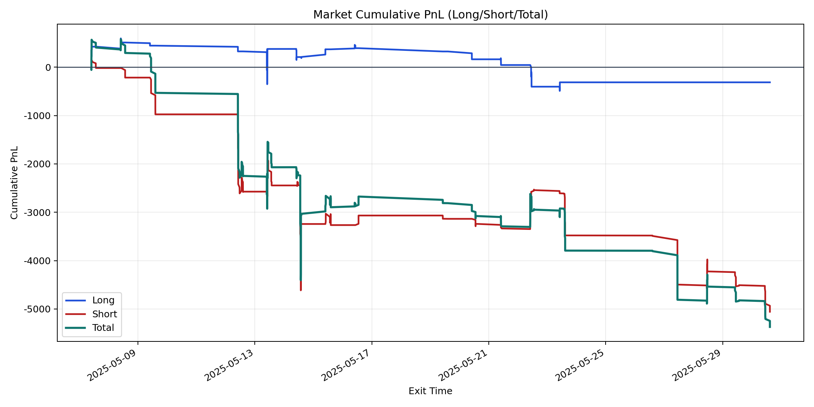
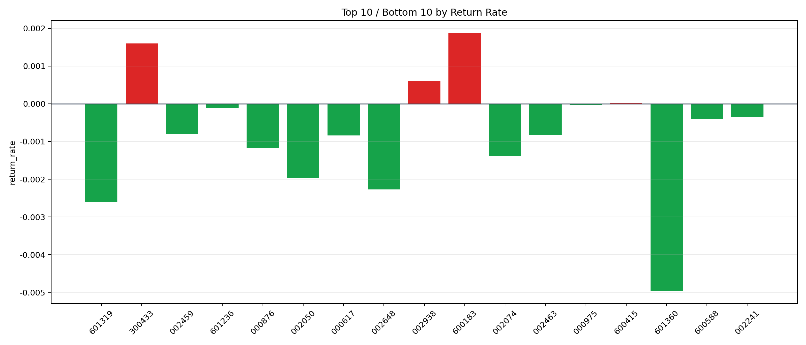

| repo_root | /home/haoranyou/data/output/dynamic_AUM_TAKER_index300 |
|---|---|
| period_months | 1 |
| period_label | 2025-05-07_to_2025-05-30 |
| start_time | 2025-05-07 09:48:22 |
| end_time | 2025-05-30 14:45:12 |
| n_trades | 462 |
| n_symbols | 17 |
| total_pnl | -5371.449250000011 |
| long_total_pnl | -313.82424999993634 |
| short_total_pnl | -5057.625000000074 |
| total_entry_notional | 7948786.0 |
| long_entry_notional | 2841937.0 |
| short_entry_notional | 5106848.999999999 |
| total_return_rate | -0.0006757571848078449 |
| long_return_rate | -0.00011042618115740649 |
| short_return_rate | -0.0009903611796628557 |
| top_symbols_by_return | ["600183", "300433", "002938", "600415", "000975", "601236", "002241", "600588", "002459", "002463"] |
| bottom_symbols_by_return | ["601360", "601319", "002648", "002050", "002074", "000876", "000617", "002463", "002459", "600588"] |

